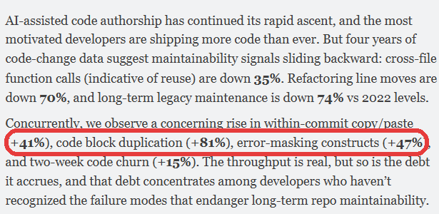
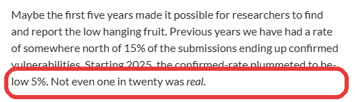

AI 时代的内源
全球最新进展，以及未来走向。

全球最新进展
这场运动的现状、大型组织中的共性模式，以及需要为之做好的准备。
AI 与内源
整个社区此刻都在问的同一个问题 - AI 会给这一切带来什么？
全球最新进展
从一种实践，走向核心战略。
而社区还在持续壮大。
基金会成立至今
中国正在帮助引领基金会。
会员资格以贡献为准 - 像 Apache 那样，通过选举加入。
组织采用内源的主要原因。
整合。
内源越来越多地与某个合作职能一同获得资金支持 - 比如 OSPO、开发者体验团队或平台工程团队。
关键要拿捏好的是范围：可以通过合作方获得资金，但职责必须覆盖全公司。它的整个前提，就是服务于每一个团队 - 而不只是出钱的那一个。
支撑体系胜过热情。
让项目得以扩展的不是自下而上的热情 - 而是工具、贡献指南、治理，以及管理者 / HR / 职业晋升通道的支持。而构建这一切的头号障碍不再是文化 - 而是时间。
人们已经被说服。他们只是没有时间去付诸行动。
价值显而易见。投入却并非如此。
不到 50% 的组织会去衡量内源 - 因为成本和回报落在不同的账本上。
此刻投入，全年收获。
投入
你投入，别人收获。
付出
受益
2026 峰会 - 为在座各位量身打造。
一场持续 22 小时、追随太阳的连续活动。2026 年 11 月 12 日。

2026 峰会
AI 正如何重塑内源
内源之所以存在，是因为代码昂贵。如果 AI 让代码几乎免费 - 那这套论证不就站不住脚了吗？
AI 压低的是能编译通过的代码的成本，而不是正确的代码 - 安全、经过测试、久经打磨 - 的成本。
东西一便宜，产量就上去。重复代码也一样。
重复代码块随之激增。
复用 / 重构的代码在全部改动中的占比从 21% 降至 3.8%。而 DORA 发现，AI 用得越多，交付稳定性反而下降。

Tokens
让 agent 去重新推导本已存在的东西，会实打实地消耗算力 - 每个团队、每个冲刺都在烧。而且会不断累积。
正确性
原来的组件赢得了多年的打磨。而复制出来的那份则从零开始 - 不管它看起来多有把握。
写起来便宜，养起来昂贵。
如今提交一份贡献几乎不费成本。而评审一份贡献的成本一如既往。

把视野拉大到 curl - 它是地球上使用最广泛的软件之一。2026 年 1 月：它关停了漏洞赏金计划（后来随着垃圾提交退潮又重新开放）。
教会 agent 养成内源的习惯。
复用共享的那部分
一种共享规格（spec）的模式 - 由一个团队掌管需求，其他团队只读消费，就在 agent 读取它们的地方。
把新东西发布回去
Shell 的 Project Fleming - 由 AI 驱动的发现，能找到与你的需求仅仅相邻的代码。
构建之前先搜索
让 agent 先去查找，再决定要不要重新推导。这正是摆在这个社区面前的机会，从今天开始。
在 AI 时代，内源并没有过时。AI 让它要解决的问题变得更大、更快 - 而不是更小。
前沿在于教会 agent 养成内源的习惯：构建前先搜索、复用、回馈贡献。
致 Jerry Tan，以及内源中国社区。
能参与到你们所构建的这一切之中，我深感荣幸。祝各位享受大会接下来的时光。
innersourcecommons.org · 2026 峰会 - 11 月 12 日，亚太开启全球这一天。
2026 峰会
参考幻灯片
基础做法很普遍。而支撑体系并不普遍。
团队共享代码的速度，快过他们建立文档、门户和培训 - 也就是让代码持续可用的那套东西 - 的速度。
一个团队自己的 AI 工具找到了那项能力 - 它已经在公司别处构建好、正常运行着。他们还是又重新造了一遍。
“回馈贡献的阻力感觉太大了。”
“如果治理没有随之提速，单纯的 AI 效率会把协作循环活活饿死。”
在赶工期的情况下，他们的决定错了吗？大概没错。